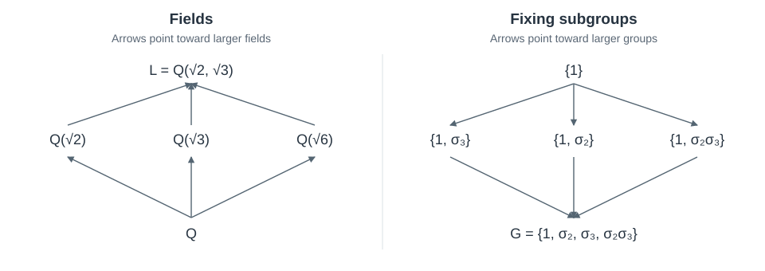
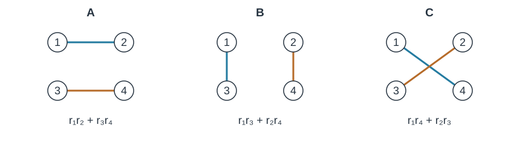

The equations
\[ x^5-2=0\qquad\text{and}\qquad x^5-4x+2=0 \]
look much alike, but their exact solutions behave differently. The first has the root \(\sqrt[5]{2}\). None of the second equation’s roots can be expressed using rational numbers, arithmetic, and radicals, however deeply nested. How could we prove that no such expression exists without knowing what someone might try?
The quadratic formula solves every quadratic by arithmetic and a square root, and radical formulas also exist for every cubic and quartic. Degree five is the first degree where this can fail. To understand why, we will track the permutations of roots that preserve arithmetic. Arithmetic operations preserve these symmetries; extracting a radical can remove some of them, but only in a particular way. Galois theory identifies that restriction and shows that it is the only obstruction to a radical solution.
These notes assume basic group theory and linear algebra. The field theory needed for the argument is developed along the way; expandable proofs give the supporting details.
Historically, Abel proved the impossibility of a general quintic formula in 1824, before Galois’s work supplied the criterion for solvability of individual equations. The argument below uses the modern formulation through fields and automorphisms.
What counts as a radical solution?
Consider a nonconstant polynomial with rational coefficients. Starting from these coefficients and rational constants, we allow addition, subtraction, multiplication, division by nonzero quantities, and extraction of integer roots. Each extraction means choosing a complex number \(u\) satisfying \(u^m=a\), where \(a\) has already been constructed and \(m\) is a positive integer. Complex intermediate values are allowed even when the root we eventually want is real.
There is no bound on the number of operations or the depth of nesting, as in \(\sqrt{2+\sqrt[3]{5}}\). A polynomial is solvable by radicals if all its roots can be obtained by such a finite construction. Separate constructions for the individual roots can be concatenated into one longer construction.
A method may branch, for example to avoid a zero denominator. Each terminating input still follows one finite path of permitted operations: a test selects operations but supplies no additional numbers. Thus an impossibility result for a particular polynomial also rules out branching radical methods for that input.
The other roots of \(x^5-2\) are obtainable by radicals too, so the degree alone cannot decide the question. Numerical approximation is a separate matter: we are asking which roots can be obtained by the specified exact operations.
The square root in the quadratic formula
Write a quadratic as
\[ x^2-sx+p=(x-r_1)(x-r_2). \]
The coefficients give the sum \(r_1+r_2=s\) and the product \(r_1r_2=p\). To recover the individual roots from their sum, we could also use their difference. Its square is already determined by the coefficients:
\[ (r_1-r_2)^2=(r_1+r_2)^2-4r_1r_2=s^2-4p. \]
Choose \(d\) with \(d^2=s^2-4p\). The roots are then
\[ \frac{s+d}{2},\qquad \frac{s-d}{2}. \]
Replacing \(d\) by \(-d\) exchanges them. Thus the expression \(r_1-r_2\) changes sign when the two roots are exchanged, while its square is unchanged. Taking a square root supplies an expression that can distinguish the two labellings.
For \(x^2-2\), this construction introduces the irrational numbers \(\pm\sqrt2\). For a quadratic whose discriminant is already a rational square, the roots are rational and no new number is needed. If the discriminant is zero, the two displayed roots coincide. The formula works in all three cases, but the arithmetic information supplied by the square root is different.
For an equation with more roots, a permutation may change several expressions at once. Which permutations preserve the arithmetic relations that the coefficients impose?
Fields and arithmetic-preserving permutations
Consider
\[ f(x)=(x^2-2)(x^2-8). \]
Its roots are \(\sqrt2,-\sqrt2,2\sqrt2,-2\sqrt2\). Reordering the four factors \(x-r_i\) leaves their product unchanged, so the coefficients alone do not distinguish the labellings. But exchanging \(\sqrt2\) with \(2\sqrt2\) does not preserve the relation \((\sqrt2)^2=2\). Even independent sign changes within the two pairs would violate \(2\sqrt2=2(\sqrt2)\). We need transformations preserving all arithmetic relations over the quantities we start with.
Initially, rational arithmetic supplies exactly \(\mathbb Q\). Once \(\sqrt2\) has been supplied, we can form rational functions of it. Because \((\sqrt2)^2=2\), every polynomial expression reduces to \(a+b\sqrt2\) with \(a,b\in\mathbb Q\). Division stays within the same collection:
\[ \frac{1}{a+b\sqrt2}=\frac{a-b\sqrt2}{a^2-2b^2}. \]
For nonzero \(a+b\sqrt2\), the denominator cannot vanish because \(\sqrt2\) is irrational.
A field is a collection closed under these arithmetic operations, containing \(0\) and \(1\), with inverses for its nonzero elements. For now our fields are subfields of \(\mathbb C\). The notation
\[ \mathbb Q(\sqrt2)=\{a+b\sqrt2:a,b\in\mathbb Q\} \]
records everything available through arithmetic after adjoining \(\sqrt2\). More generally, \(K(u)\) denotes the smallest field containing a field \(K\) and the number \(u\).
This notation also records a radical construction without expanding nested expressions. For instance, adjoining \(u=\sqrt2\) and then \(v=\sqrt[3]{1+u}\) gives \(\mathbb Q\subset\mathbb Q(u)\subset\mathbb Q(u,v)\). In general a radical tower has the form
\[ K=K_0\subseteq K_1\subseteq\cdots\subseteq K_m, \qquad K_i=K_{i-1}(u_i),\quad u_i^{n_i}\in K_{i-1}. \tag{1}\]
An inclusion can be an equality if the radical was already available. A polynomial is solvable by radicals over \(K\) precisely when some such tower contains all its roots. It may include auxiliary numbers that cannot be obtained by arithmetic from the polynomial’s roots.
To study all roots of a polynomial \(f\in K[x]\), let
\[ L=K(r_1,\ldots,r_d), \]
where \(r_1,\ldots,r_d\) are its distinct roots. This is the splitting field of \(f\) over \(K\): the smallest field containing \(K\) in which \(f\) factors into linear factors. A \(K\)-automorphism of \(L\) is a bijection \(\sigma:L\to L\) preserving addition and multiplication and fixing every element of \(K\). Such a map preserves every polynomial relation with coefficients in \(K\). In particular,
\[ f(r)=0\quad\Longrightarrow\quad f(\sigma(r))=\sigma(f(r))=0. \]
It therefore permutes the roots. Conversely, its values on the roots determine its value on every element of \(L\), since those elements are rational expressions in the roots. The automorphisms form a group under composition, called the Galois group and written \(\operatorname{Gal}(L/K)\). An automorphism fixing every root fixes every element of \(L\), so distinct automorphisms give distinct root permutations. This identifies the Galois group with a subgroup of \(S_d\); its action on the roots is said to be faithful.
For \((x^2-2)(x^2-8)\), the splitting field is \(\mathbb Q(\sqrt2)\). Besides the identity, there is exactly one automorphism:
\[ \sigma(a+b\sqrt2)=a-b\sqrt2. \]
It preserves addition, and preservation of multiplication follows by expanding \((a+b\sqrt2)(c+d\sqrt2)=(ac+2bd)+(ad+bc)\sqrt2\). It changes all four root signs together, as required by the relations between them.
Here is why these symmetries constrain a calculation. If an automorphism fixes every number currently available, it fixes every sum, product, difference, and quotient formed from them. Arithmetic alone cannot produce a number that this automorphism moves. Adjoining \(\sqrt2\) does supply such a number: an automorphism required to fix the enlarged field can no longer reverse its sign. The question is which symmetries a succession of radical adjunctions can eliminate.
The word “known” will mean membership in the specified base field. The numbers \(\sqrt2\) and \(-\sqrt2\) have different signs, but our permitted arithmetic operations over \(\mathbb Q\) are preserved by their exchange.
Supplying an intermediate number
Consider the splitting field
\[ L=\mathbb Q(\sqrt2,\sqrt3) \]
of \((x^2-2)(x^2-3)\). The element \(\sqrt3\) is not in \(\mathbb Q(\sqrt2)\). Indeed, squaring a hypothetical equality \(\sqrt3=a+b\sqrt2\) gives \(3=a^2+2b^2+2ab\sqrt2\), so \(ab=0\). The two possibilities would make either \(3\) or \(3/2\) a rational square, which is impossible because prime exponents in a rational square are even. Repeating the arithmetic used for \(\mathbb Q(\sqrt2)\), now adjoining \(\sqrt3\), gives a unique expression
\[ a+b\sqrt2+c\sqrt3+d\sqrt6,\qquad a,b,c,d\in\mathbb Q, \]
for each element of \(L\). Thus \(1,\sqrt2,\sqrt3,\sqrt6\) is a basis over \(\mathbb Q\).
An automorphism fixing \(\mathbb Q\) must send \(\sqrt2\) to \(\pm\sqrt2\) and \(\sqrt3\) to \(\pm\sqrt3\). All four sign choices work:
\[ \sigma_{\epsilon,\eta} (a+b\sqrt2+c\sqrt3+d\sqrt6) =a+\epsilon b\sqrt2+\eta c\sqrt3+\epsilon\eta d\sqrt6, \]
where \(\epsilon,\eta\in\{1,-1\}\). Each map preserves the relations \((\sqrt2)^2=2\), \((\sqrt3)^2=3\), and \(\sqrt6=\sqrt2\sqrt3\). Multiplying basis expressions and reducing with these relations verifies preservation of multiplication; uniqueness of the basis expression makes the maps well defined. Composition multiplies the two signs independently, so
\[ G=\operatorname{Gal}(L/\mathbb Q)\cong C_2\times C_2, \]
where \(C_2\) is the cyclic group of order two.
Suppose we supply \(\sqrt6\) and require all subsequent symmetries to fix it. Since \(\sqrt6=\sqrt2\sqrt3\), we need \(\epsilon\eta=1\). Only the identity and simultaneous sign reversal remain. Let \(H\) be this two-element subgroup. Which elements of \(L\) does every element of \(H\) fix? Comparing coefficients in the basis, simultaneous sign reversal fixes \(a+b\sqrt2+c\sqrt3+d\sqrt6\) precisely when \(b=c=0\). Its fixed elements are exactly \(\mathbb Q(\sqrt6)\).
This computation works for the other subgroups as well. Write \(\sigma_2\) for the flip of \(\sqrt2\) alone and \(\sigma_3\) for the flip of \(\sqrt3\) alone. For a subgroup \(H\), its fixed field is
\[ L^H=\{x\in L:h(x)=x\text{ for every }h\in H\}. \]
It is a field because automorphisms preserve the arithmetic operations. The same coefficient comparison gives the other fixed fields:

For example, \(\mathbb Q\subset\mathbb Q(\sqrt6)\subset L\) corresponds to \(G\supset H\supset\{1\}\). After supplying \(\sqrt6\), supplying \(\sqrt2\) as well gives \(\sqrt3=\sqrt6/\sqrt2\) and hence all of \(L\). The fixing subgroup then contains only the identity. These are five intermediate fields; could there be others? To answer this, we need a general way to count automorphisms and recover the field they fix.
Degrees and the possible images of a root
Our field \(\mathbb Q(\sqrt2,\sqrt3)\) has a four-element basis and four automorphisms. Both counts arose from two successive choices: two powers of each square root for the basis, and two signs for each image. The relation between dimension and root choices holds much more generally.
For a finite-dimensional extension \(E/K\), its degree is \([E:K]=\dim_K E\). If a number \(u\) satisfies a nonzero polynomial over \(K\), it is algebraic over \(K\). Its minimal polynomial is the monic polynomial of smallest degree vanishing at \(u\). It is irreducible, meaning that it cannot factor into polynomials of smaller positive degree; otherwise one factor would vanish at \(u\). Its roots are called the conjugates of \(u\) over \(K\). If its degree is \(d\), then \(1,u,\ldots,u^{d-1}\) is a basis of \(K(u)\) over \(K\). The proof below checks both spanning, including inverses, and independence.
Degrees multiply along a tower:
\[ [L:K]=[L:E][E:K]. \tag{2}\]
The products of a basis of \(L\) over \(E\) and a basis of \(E\) over \(K\) give a basis of \(L\) over \(K\). In particular, adjoining finitely many algebraic numbers gives a finite-degree extension.
Proof: minimal polynomials, bases, and the tower law
For an algebraic \(u\), choose a monic polynomial \(m\) of smallest degree vanishing at \(u\). Every polynomial \(h\) vanishing at \(u\) is divisible by \(m\): division gives \(h=qm+r\) with \(\deg r<\deg m\), and \(r(u)=0\) forces \(r=0\) by minimality. The polynomial \(m\) is irreducible because in a nontrivial factorization one factor would vanish at \(u\).
Over a field, division with remainder works by repeatedly subtracting a multiple of the divisor that cancels the current leading term. The degree of the remainder decreases at each step. Applying this division repeatedly to two polynomials gives the Euclidean algorithm; substituting backward through the divisions expresses their greatest common divisor as a polynomial combination of them. In particular, if \(m\) is irreducible and does not divide \(h\), there are polynomials \(A,B\) with \(Ah+Bm=1\).
For an algebraic element \(u\) with minimal polynomial \(m\), this identity proves that \(h(u)\ne0\) has inverse \(A(u)\). Thus every rational expression in \(u\) reduces to a polynomial in \(u\) of degree smaller than \(d=\deg m\). Minimality makes \(1,u,\ldots,u^{d-1}\) linearly independent, so these elements form a basis and \([K(u):K]=d\). It also proves that sending \(u\) to another root of \(m\) preserves nonzero denominators: if \(h(u)\ne0\), evaluation of \(Ah+Bm=1\) at the other root makes \(h\) nonzero there too.
For the tower law, let the \(v_i\) form a basis of \(L\) over \(E\) and the \(w_j\) a basis of \(E\) over \(K\). The products \(v_iw_j\) span \(L\) over \(K\). Their independence follows by grouping a proposed linear relation first by \(v_i\) and then by \(w_j\). Their number is \([L:E][E:K]\), proving Equation 2.
For fields given formally, such as rational-function fields, the same arithmetic constructs an extension containing a root. Take an irreducible polynomial \(m\) of degree \(d\). Use polynomials of degree less than \(d\) as elements, with addition and multiplication followed by reduction modulo \(m\). These operations are associative and distributive because replacing a polynomial by its remainder changes it by a multiple of \(m\), and sums and products respect this equivalence. Every nonzero element has an inverse by the identity above. This is therefore a field, containing a copy of the original field as the constant polynomials. The element represented by the remainder of \(T\) is a root of \(m\).
Choose an irreducible factor of a polynomial that has not yet split, adjoin a root this way, and factor out the resulting linear factor. Repeating produces a splitting field in finitely many steps. For subfields of \(\mathbb C\), we can instead choose the roots directly in \(\mathbb C\).
An embedding is a map from one field into another that preserves arithmetic and \(1\). Such a map is injective: sending a nonzero element to zero would also send its product with its inverse to zero. An embedding of \(K(u)\) fixing \(K\) can send \(u\) to any root of its minimal polynomial, provided the target field contains that root. When earlier generators have already been mapped, we apply that embedding to the coefficients of the next minimal polynomial before choosing its root.
To count automorphisms this way, the field must contain the possible images. For example, \(\mathbb Q(\sqrt[3]{2})\) has degree three but only one automorphism: the other roots of its generator’s minimal polynomial \(T^3-2\) are nonreal and lie outside this real field. A splitting field avoids this problem by including all the roots.
Throughout, our fields have characteristic zero: adding \(1\) to itself a positive number of times never gives zero. In this setting a finite extension that is a splitting field is called a Galois extension. For a splitting field \(L/K\) and any intermediate field \(E\), the count is
\[ |\operatorname{Gal}(L/E)|=[L:E]. \tag{3}\]
The same argument proves that every \(K\)-embedding of \(E\) into \(L\) extends to a \(K\)-automorphism of \(L\). The splitting field contains all the roots needed to extend each successive choice.
Proof: extending and counting embeddings
In characteristic zero, an irreducible polynomial has distinct roots. Its derivative is nonzero and has smaller degree, so it is relatively prime to the polynomial; a repeated root would be a root of both.
For the example \(a=\sqrt[3]{2}\), the minimal polynomial over \(\mathbb Q\) is \(T^3-2\): a reducible cubic would have a rational root, and no rational cube equals two.
Suppose \(\tau:E\to L\) is an embedding and \(u\) is algebraic over \(E\), with minimal polynomial \(m\) of degree \(d\). Apply \(\tau\) to the coefficients of \(m\) to form \(\tau(m)\). If \(v\in L\) is a root of \(\tau(m)\), the substitution
\[ \sum_{j=0}^{d-1}a_ju^j \longmapsto \sum_{j=0}^{d-1}\tau(a_j)v^j \tag{4}\]
defines an embedding of \(E(u)\) extending \(\tau\). To check preservation of multiplication, reduce a product modulo \(m\) before evaluating. After applying \(\tau\), the difference between that product and its remainder is a multiple of \(\tau(m)\) and vanishes at \(v\). Addition is immediate, and a map of fields preserving \(1\) is injective. Every extension must take this form because the image of \(u\) must satisfy \(\tau(m)\). Distinct roots \(v\) give distinct embeddings.
Now let \(L\) be the splitting field of \(f\in K[T]\), let \(E\) be intermediate, and let \(\tau:E\to L\) fix \(K\). Write \(L=E(r_1,\ldots,r_d)\) using all distinct roots of \(f\). When adjoining \(r_j\), its minimal polynomial over the current field divides \(f\). Applying the embedding already constructed to that divisibility relation shows that its transformed minimal polynomial also divides \(f\), since \(\tau\) fixes the coefficients of \(f\). Thus every root needed for Equation 4 belongs to \(L\). In characteristic zero the transformed minimal polynomial has distinct roots, so the number of extensions at that step is its degree.
Starting from the identity on \(E\), the product of these degrees is \([L:E]\) by the tower law. The resulting embeddings of \(L\) fix \(K\), are injective, and map the finite set of roots of \(f\) into itself. They permute that set, so their images contain all the roots and \(K\), and hence all of \(L\). They are automorphisms. This proves Equation 3. Starting from an arbitrary \(\tau\) proves the extension statement as well.
Recovering fields from their symmetries
For any splitting field \(L/K\), an intermediate field \(E\) determines a subgroup \(\operatorname{Gal}(L/E)\). A subgroup \(H\) determines a field \(L^H\). Both operations reverse inclusion: a larger field imposes more conditions on the automorphisms, while a larger group imposes more conditions on its fixed elements.
If we start with \(E\), keep only its fixing subgroup, and then take that subgroup’s fixed field, we certainly recover every element of \(E\). Could we also recover an element outside \(E\) that happens to be fixed by the same automorphisms? The fundamental theorem of Galois theory says that this cannot happen: every element outside \(E\) is moved by some automorphism that fixes \(E\). The two operations are therefore inverse. For a finite Galois extension \(L/K\) with group \(G\), it gives
\[ E=L^{\operatorname{Gal}(L/E)}, \qquad H=\operatorname{Gal}(L/L^H). \tag{5}\]
The associated degrees are
\[ [L:L^H]=|H|, \qquad [L^H:K]=\frac{|G|}{|H|}. \tag{6}\]
The proof below obtains the degree formula by linear algebra and then deduces the correspondence.
Proof of the field–subgroup correspondence
Let \(L/K\) be finite Galois, let \(H=\{h_1,\ldots,h_m\}\) be a subgroup of its Galois group, and put \(F=L^H\). We first prove \([L:F]\le m\). Choose any \(m+1\) elements \(x_1,\ldots,x_{m+1}\in L\). An \(F\)-linear relation among them must remain valid after applying any \(h_i\), since \(h_i\) fixes its coefficients. We therefore consider all these equations together:
\[ \sum_{j=1}^{m+1}h_i(x_j)c_j=0,\qquad 1\le i\le m. \]
There are more unknowns than equations, so a nonzero solution exists over \(L\). To obtain an \(F\)-linear relation, however, its coefficients must belong to \(F\). The following choice forces them to be fixed by every element of \(H\). Among all such solutions choose one with the fewest nonzero coordinates, and scale one nonzero coordinate to \(1\). For any \(\tau\in H\), applying \(\tau\) to all the equations replaces the row indexed by \(h_i\) with the row indexed by \(\tau h_i\). This permutes the rows. Consequently \((\tau(c_j))\) is another solution, with the same zero coordinates and the same normalized coordinate.
Subtract the original solution. If the difference were nonzero, the coordinate we normalized would be zero and it would have fewer nonzero coordinates than the original solution, a contradiction. Hence \(\tau(c_j)=c_j\) for every \(\tau\in H\) and every \(j\). All coefficients belong to \(F\). Taking the row corresponding to the identity gives a nontrivial \(F\)-linear relation among the \(x_j\). Every \(m+1\) elements of \(L\) are therefore dependent over \(F\), proving \([L:F]\le m\).
Since \(F\) is intermediate, \(L\) is still a splitting field over \(F\). The embedding count gives \(|\operatorname{Gal}(L/F)|=[L:F]\). The inclusion \(H\subseteq\operatorname{Gal}(L/F)\) yields the reverse inequality \(m\le[L:F]\). Thus
\[ [L:L^H]=|H|, \qquad H=\operatorname{Gal}(L/L^H). \]
For an intermediate field \(E\), let \(H=\operatorname{Gal}(L/E)\). We have \(E\subseteq L^H\) and \([L:E]=|H|=[L:L^H]\). The tower law forces \([L^H:E]=1\), hence \(E=L^H\). Both directions of the correspondence and Equation 6 follow.
In particular, the elements fixed by every automorphism are exactly \(K\). For the biquadratic example, the five subgroups listed above are all the subgroups of \(C_2\times C_2\): each proper nontrivial subgroup has order two and is generated by one of the three nonidentity elements. The correspondence proves that the five displayed fields are all the intermediate fields as well.
Normality and restriction
In our example, the four automorphisms of \(L=\mathbb Q(\sqrt2,\sqrt3)\) give only two different actions on \(E=\mathbb Q(\sqrt6)\):
\[ \begin{array}{c|c} \{1,\sigma_2\sigma_3\}&\sqrt6\mapsto\sqrt6\\ \{\sigma_2,\sigma_3\}&\sqrt6\mapsto-\sqrt6. \end{array} \]
These two actions form a group of order two. We obtain it by grouping together automorphisms that have the same effect on \(E\). This is what a quotient group will describe.
First, restricting an automorphism \(g:L\to L\) to a map \(E\to E\) requires \(g(E)=E\). That holds in this example because every automorphism sends \(\sqrt6\) to \(\pm\sqrt6\). For \(E=\mathbb Q(\sqrt[3]{2})\) inside the splitting field of \(x^3-2\), it can fail: an automorphism sending the real cube root to a nonreal root sends \(E\) to a different subfield. Such an automorphism exists by extension of embeddings.
For \(E=L^H\), the correspondence translates \(g(E)=E\) into \(gHg^{-1}=H\). A subgroup satisfying this condition for every \(g\in G\) is normal, written \(H\triangleleft G\). Thus normality is exactly what allows every automorphism of \(L\) to restrict to an automorphism of \(E\). The expandable proof below verifies this translation.
When this condition holds, two elements \(g_1,g_2\in G\) have the same restriction precisely when \(g_2^{-1}g_1\in H\). The sets \(gH=\{gh:h\in H\}\), called cosets of \(H\), therefore collect the automorphisms with the same restriction. The multiplication \((gH)(kH)=gkH\) is independent of the representatives because \(H\) is normal. The cosets with this multiplication form the quotient group \(G/H\).
The two rows of our table are exactly the two cosets of \(H=\{1,\sigma_2\sigma_3\}\). The subgroup \(H\) describes the symmetries still available after \(\sqrt6\) is fixed. The quotient \(G/H\) describes the symmetries of \(\sqrt6\) over the original field \(\mathbb Q\).
Every automorphism of \(E\) fixing \(K\) extends to \(L\), so restriction is surjective and
\[ \operatorname{Gal}(E/K)\cong G/H. \tag{7}\]
Under this condition \(E/K\) is itself Galois, as the normality proof also shows.
In particular, a chain of subgroups normal in their predecessors corresponds to a chain of Galois steps:
\[ \begin{aligned} G_0\triangleright G_1\triangleright\cdots\triangleright G_r &\quad\longleftrightarrow\quad L^{G_0}\subseteq L^{G_1}\subseteq\cdots\subseteq L^{G_r},\\ \operatorname{Gal}(L^{G_{i+1}}/L^{G_i}) &\cong G_i/G_{i+1}. \end{aligned} \tag{8}\]
Proof: normality and restriction to an intermediate field
Let \(L/K\) be finite Galois with group \(G\), and let \(a\in L\). Form the polynomial whose roots are the distinct elements of the orbit \(\{g(a):g\in G\}\). Its coefficients are fixed by \(G\), hence belong to \(K\) by the fixed-field theorem. It vanishes at \(a\), so the minimal polynomial \(m_a\) divides it. Conversely, every orbit element is a root of \(m_a\), since applying \(g\) to \(m_a(a)=0\) gives \(m_a(g(a))=0\). In characteristic zero these roots are distinct, so the two monic polynomials coincide. Thus the orbit consists exactly of the roots of the minimal polynomial, called the conjugates of \(a\) over \(K\).
Suppose an intermediate field \(E\) satisfies \(g(E)=E\) for every \(g\in G\). Then every conjugate of each \(a\in E\) belongs to \(E\). Choose a finite basis of \(E\) over \(K\); it is also a finite set of field generators. The product of their minimal polynomials splits in \(E\), and its roots generate \(E\), so \(E/K\) is Galois. Conversely, if \(E\) is a splitting field over \(K\), every \(g\in G\) permutes its generating roots and maps \(E\) to itself.
The condition that every minimal polynomial with a root in an extension splits there is called normality of the field extension. For finite extensions in characteristic zero it is equivalent to being Galois. If an extension is normal, take finitely many generators to express it as a splitting field; the other implication follows from the orbit argument. This also explains why the real field \(\mathbb Q(\sqrt[4]{2})\) fails the condition over \(\mathbb Q\).
For \(E=L^H\), \(x\in E\), and \(h\in H\), we have \((ghg^{-1})(g(x))=g(h(x))=g(x)\). Thus \(g(E)\subseteq L^{gHg^{-1}}\); applying the same argument to \(g^{-1}\) gives equality. The identity \(g(E)=L^{gHg^{-1}}\) and the correspondence show that preservation of \(E\) by every \(g\) is equivalent to \(H\triangleleft G\). Restriction \(G\to\operatorname{Gal}(E/K)\) has kernel \(H\) and is surjective by extension of embeddings. Its cosets therefore give the isomorphism Equation 7.
In a radical construction, each field enlargement comes from an equation \(u^n=a\). Its group must therefore respect the special form of that equation.
The symmetry of a single radical
Consider \(u=\sqrt[3]{2}\) and \(\omega=(-1+\sqrt{-3})/2\), so the three roots of \(x^3-2\) are \(u,\omega u,\omega^2u\). If an automorphism fixes \(\omega\) and sends \(u\) to \(\omega u\), its action on the other roots is forced:
\[ u\longmapsto\omega u\longmapsto\omega^2u\longmapsto u. \]
Fixing \(\omega\) means that we cannot permute these three roots independently. The same observation works for any radical.
Suppose \(u^n=a\ne0\), with \(a\in F\), and assume \(F\) contains a primitive \(n\)-th root of unity \(\zeta_n\): its \(n\)-th power is \(1\), and its first \(n\) powers are distinct. The roots of \(x^n-a\) are
\[ u,\zeta_nu,\ldots,\zeta_n^{n-1}u. \]
They all belong to \(F(u)\), so this extension is Galois. An automorphism \(\sigma\) fixing \(F\) must send \(u\) to one of these roots. Its action is determined by the ratio \(\sigma(u)/u\), which belongs to the cyclic group \(\mu_n=\{1,\zeta_n,\ldots,\zeta_n^{n-1}\}\). If \(\sigma(u)=\zeta_n^j u\) and \(\tau(u)=\zeta_n^k u\), then
\[ (\sigma\tau)(u)=\sigma(\zeta_n^k u)=\zeta_n^{j+k}u, \]
because \(\sigma\) fixes \(\zeta_n\). Composition adds the exponents modulo \(n\). Thus
\[ \operatorname{Gal}(F(u)/F)\hookrightarrow\mu_n \tag{9}\]
is a homomorphism, meaning that it preserves the group operation. Its kernel, the set of automorphisms sent to \(1\), is trivial because an automorphism fixing both \(F\) and \(u\) fixes \(F(u)\). This makes the homomorphism injective. Every subgroup of a cyclic group is cyclic: among its powers of a generator, the smallest positive exponent that occurs generates all the others by division with remainder. Consequently a single radical extension, with roots of unity available, has cyclic Galois group. Its order may be smaller than \(n\). For \(a=0\) the radical is zero and no extension is introduced.
If the required root of unity is absent, we may adjoin it. The equation \(\zeta_n^n=1\) makes this a permitted radical step; we choose a root of multiplicative order \(n\). For complex numbers these roots exist, and all roots of \(x^n-1\) are powers of a primitive one. This also holds over any characteristic-zero field after adjoining roots: a finite subgroup of a field’s multiplicative group is cyclic, as proved in the roots-of-unity interlude.
We also need to understand the group of \(K(\zeta_n)/K\). Every automorphism sends \(\zeta_n\) to another element of order \(n\), hence to \(\zeta_n^a\) with \(a\) coprime to \(n\). Composition multiplies the exponents modulo \(n\), giving an injection
\[ \operatorname{Gal}(K(\zeta_n)/K) \hookrightarrow(\mathbb Z/n\mathbb Z)^\times. \tag{10}\]
The group on the right consists of the invertible residue classes under multiplication, which is commutative. Thus adjoining roots of unity has abelian Galois group, even when it is not cyclic. We need no formula for its degree.
Why primitive roots of unity exist
Let \(H\) be a finite subgroup of the multiplicative group of a field. Its elements commute. For each prime \(p\) appearing in an element order, choose an element whose order contains the largest possible power \(p^{a_p}\). Raising it to the part of its order coprime to \(p\) produces an element of order exactly \(p^{a_p}\). The product of these chosen elements, over all such primes, has order \(M=\prod_p p^{a_p}\). Indeed, commuting elements of coprime orders have product of order the product: if a power of their product is one, the corresponding powers of each factor belong to the intersection of two cyclic groups of coprime orders, which contains only the identity.
Every element of \(H\) has order dividing \(M\) by construction. Thus every element is a root of \(T^M-1\), so \(|H|\le M\). The element of order \(M\) already has \(M\) distinct powers in \(H\), forcing equality and proving that \(H\) is cyclic.
In a splitting field of \(T^n-1\) in characteristic zero, there are exactly \(n\) distinct roots, and they form a multiplicative group. This group is therefore cyclic of order \(n\) and has a primitive \(n\)-th root of unity.
Solvable groups
If a radical solution can be described by successive Galois steps, Equation 8 and Equation 9 suggest a chain of subgroups whose successive quotients are abelian. This is the property called solvability. A finite group \(G\) is solvable if it has a chain
\[ G=G_0\triangleright G_1\triangleright\cdots\triangleright G_r=\{1\} \]
in which \(G_{i+1}\) is normal in \(G_i\) and \(G_i/G_{i+1}\) is abelian. Normality is required only in the preceding subgroup.
For example, \(S_3\) has the normal subgroup \(A_3=\{1,(123),(132)\}\). Conjugating a three-cycle relabels its entries, so it preserves this subgroup. The quotient \(S_3/A_3\) has order two, while \(A_3\) is cyclic of order three. Hence \(S_3\) is solvable, although it is not abelian. The noncommutativity of the whole group is compatible with successive quotients being abelian.
Three elementary facts let us pass between the groups arising from different field constructions:
- A subgroup of a solvable group is solvable.
- A quotient of a solvable group is solvable.
- If \(N\triangleleft G\) and both \(N\) and \(G/N\) are solvable, then \(G\) is solvable.
Proofs: subgroups, quotients, extensions, and prime-order refinements
For a homomorphism \(\phi:G\to Q\), two elements have the same image precisely when they lie in the same coset of \(\ker\phi\). The kernel is normal, and sending a coset to its common image gives an isomorphism from \(G/\ker\phi\) onto the image of \(\phi\). Cosets of any subgroup partition a finite group into sets of equal size, proving that subgroup orders divide group orders. These facts justify the counting and quotient operations below.
Suppose \(G=G_0\triangleright\cdots\triangleright G_r=1\) is a solvable chain. For a subgroup \(J\le G\), use \(J_i=J\cap G_i\). Conjugation by \(J_i\) preserves \(J_{i+1}\) because it preserves both \(J\) and \(G_{i+1}\). The map from \(J_i\) to \(G_i/G_{i+1}\) has kernel \(J_{i+1}\), so \(J_i/J_{i+1}\) is isomorphic to a subgroup of an abelian group and is abelian. This proves solvability of subgroups.
For a surjective homomorphism \(\phi:G\to Q\), the images \(\phi(G_i)\) form a normal chain. Each successive quotient is an image of \(G_i/G_{i+1}\) and is therefore abelian. This proves solvability of quotients.
If \(N\triangleleft G\) and \(G/N\) is solvable, take the inverse images in \(G\) of a solvable chain in \(G/N\). They form a normal chain from \(G\) down to \(N\), with the same successive quotients. Appending a solvable chain in \(N\) proves the extension property.
Finally, let \(A\) be a nontrivial finite abelian group. Choose a maximal proper subgroup \(B\). Subgroups of \(A/B\) lift to subgroups of \(A\) containing \(B\), so \(A/B\) has no nontrivial proper subgroup. Every nonidentity element generates it, making it cyclic, and a cyclic group of composite order has a nontrivial proper subgroup. Thus \(A/B\) has prime order. Induct on \(|A|\) to obtain a prime-order cyclic refinement for \(A\). Apply this to each abelian quotient in a solvable chain and take inverse images of the refining subgroups. Each new subgroup is normal in its predecessor, and every quotient has prime order.
Before applying this to a radical tower, we must check that its field extensions really can be arranged into the required Galois steps over the original base. This is where auxiliary radicals and missing conjugates have to be handled.
Why every radical solution has a solvable group
Consider the tower
\[ \mathbb Q\subset\mathbb Q(\sqrt2) \subset\mathbb Q(\sqrt[4]{2}). \]
The second step has degree two: if \((a+b\sqrt2)^2=\sqrt2\) with \(a,b\in\mathbb Q\), comparison of rational parts gives \(a^2+2b^2=0\), forcing \(a=b=0\), a contradiction. Thus each step is quadratic and Galois over its immediate predecessor, and the tower law makes \(x^4-2\) the minimal polynomial of \(\sqrt[4]{2}\) over \(\mathbb Q\). Nevertheless, the final field is real and lacks the conjugate \(i\sqrt[4]{2}\), so it is not Galois over \(\mathbb Q\). Successive Galois steps do not imply that the total extension is Galois over its starting field. Furthermore, a radical solution may use numbers outside the splitting field of the polynomial being solved. We cannot simply regard its tower as a sequence of intermediate fields of that splitting field.
We will instead prove that every radical tower is contained in a finite Galois extension with solvable Galois group. The construction enlarges each stage enough to contain its conjugates over the original base. In the fourth-root example, the second radicand \(\sqrt2\) has conjugate \(-\sqrt2\). Adjoining square roots of both gives \(\sqrt[4]{2}\) and \(i\sqrt[4]{2}\), and hence also \(i\). The two equations combine into a polynomial over the original field:
\[ (T^2-\sqrt2)(T^2+\sqrt2)=T^4-2. \]
Adjoining their roots therefore gives a splitting field over \(\mathbb Q\). In the general tower, we can do the same thing at each stage: include every conjugate of the next radicand, then adjoin all the roots of the corresponding equations.
With the required roots of unity present, an automorphism fixing the previous stage can only multiply each new radical by a root of unity. The group of these multipliers is abelian. The extension property of solvable groups therefore preserves solvability at each enlarged stage.
Full construction of the Galois enlargement
For the general construction, take the radical tower Equation 1, with \(u_i^{n_i}=a_i\in K_{i-1}\). Discard any zero generators, which contribute nothing, and let \(N\) be the least common multiple of the \(n_i\). Start with
\[ P_0=K(\zeta_N). \]
This is Galois over \(K\), its group is abelian by Equation 10, and it contains every root of unity required later. If the original tower has no steps, there is nothing to prove.
Suppose we have constructed a Galois extension \(P_{i-1}/K\) containing \(K_{i-1}\), with solvable group. The next radicand \(a_i\) belongs to \(P_{i-1}\). For each \(\tau\in\operatorname{Gal}(P_{i-1}/K)\), choose \(b_\tau\) satisfying
\[ b_\tau^{n_i}=\tau(a_i), \qquad P_i=P_{i-1}(b_\tau:\tau\in\operatorname{Gal}(P_{i-1}/K)). \tag{11}\]
Because the roots of unity are already present, \(P_i\) contains every root of every equation used in Equation 11. In particular it contains \(u_i\) and therefore \(K_i\).
Why is \(P_i\) Galois over \(K\)? The polynomial
\[ h_i(T)=\prod_{\tau\in\operatorname{Gal}(P_{i-1}/K)} \bigl(T^{n_i}-\tau(a_i)\bigr) \]
has coefficients in \(P_{i-1}\) fixed by every automorphism of \(P_{i-1}/K\), since those automorphisms permute its factors. The fixed-field theorem puts its coefficients in \(K\). If \(g_i\in K[T]\) is a polynomial whose splitting field is \(P_{i-1}\), then \(P_i\) is the splitting field of \(g_ih_i\) over \(K\). Repeated factors do not change a splitting field.
Now consider an automorphism of \(P_i\) fixing \(P_{i-1}\). It fixes each radicand \(\tau(a_i)\) and can only multiply each \(b_\tau\) by an \(n_i\)-th root of unity. The same calculation as for a single radical gives an injection
\[ \operatorname{Gal}(P_i/P_{i-1}) \hookrightarrow\prod_{\tau}\mu_{n_i}. \]
There may be relations between the \(b_\tau\), so not every combination of multipliers need occur. The group is nevertheless abelian, being a subgroup of an abelian product.
Restriction from \(P_i\) to \(P_{i-1}\) is surjective by extension of embeddings. Its kernel is \(\operatorname{Gal}(P_i/P_{i-1})\), so
\[ \operatorname{Gal}(P_i/K)\big/ \operatorname{Gal}(P_i/P_{i-1}) \cong\operatorname{Gal}(P_{i-1}/K). \]
The kernel is abelian and the quotient is solvable by induction. The extension property of solvable groups shows that \(\operatorname{Gal}(P_i/K)\) is solvable. This completes the induction.
Let \(P\) denote this finite Galois enlargement. If the roots of our polynomial lie in the original radical tower, its splitting field \(L\) lies in \(P\). Both \(P/K\) and \(L/K\) are Galois, so restriction gives a surjective homomorphism
\[ \operatorname{Gal}(P/K)\twoheadrightarrow\operatorname{Gal}(L/K). \]
The group on the right is a quotient of a solvable group and is therefore solvable. We have proved the necessary condition for every radical construction allowed at the beginning, including those with unrelated auxiliary quantities.
Constructing radicals from a solvable group
Suppose the Galois group is solvable. Its chain with cyclic prime-order quotients corresponds to field extensions with cyclic prime-order groups. To construct the roots by radicals, we need each such extension \(E/F\) to have a generator \(u\) whose appropriate power belongs to \(F\).
Finding a radical generator
For a quadratic Galois extension, let \(\sigma\) be its nonidentity automorphism and choose \(v\) that it moves. The difference \(u=v-\sigma(v)\) is nonzero and satisfies \(\sigma(u)=-u\), so \(u^2\) is fixed and belongs to \(F\). This recovers the difference of roots used in the quadratic formula. For higher prime degree \(p\), we can seek the same behavior with \(-1\) replaced by a nontrivial \(p\)-th root of unity. Taking the \(p\)-th power will again produce an element fixed by the group.
Let \(E/F\) be Galois of prime degree \(p\), with group generated by an automorphism \(\sigma\). Assume \(F\) contains a primitive \(p\)-th root of unity \(\zeta\). Because \(\sigma\) fixes \(F\), it is an \(F\)-linear operator on the vector space \(E\): for \(a,b\in F\) and \(x,y\in E\), it satisfies \(\sigma(ax+by)=a\sigma(x)+b\sigma(y)\). The equation \(\sigma(u)=\zeta^k u\) that we want is therefore an eigenvector equation. The identity \(\sigma^p=I\) means that substituting \(\sigma\) into \(T^p-1\) gives the zero operator. Over \(F\), this polynomial factors as
\[ T^p-1=(T-1)(T-\zeta)\cdots(T-\zeta^{p-1}), \]
with distinct roots. An operator annihilated by a product of distinct linear factors is diagonalizable; the expandable proof below gives the projection argument. Because \(\sigma\ne I\), it has a nonzero eigenvector \(u\) with eigenvalue \(\zeta^k\ne1\). Therefore
\[ \sigma(u)=\zeta^k u \quad\Longrightarrow\quad \sigma(u^p)=u^p. \]
Since \(\sigma\) generates the group, \(u^p\) is fixed by the whole group and belongs to \(F\). But \(u\notin F\), because \(\sigma(u)\ne u\). The tower law gives
\[ p=[E:F]=[E:F(u)][F(u):F]. \]
The second factor is greater than one, so primality forces \(E=F(u)\). We have obtained a radical generator with \(u^p\in F\).
Proof of the diagonalization step
Suppose an operator \(A\) is annihilated by \(\prod_{j=1}^s(T-\lambda_j)\), with distinct scalars \(\lambda_j\) in the base field. To select the eigenspace for \(\lambda_j\), seek a polynomial that equals \(1\) at \(\lambda_j\) and \(0\) at every other \(\lambda_k\). The factors \(T-\lambda_k\) supply the zeros, and division by the value at \(\lambda_j\) gives the normalization:
\[ P_j(T)=\prod_{k\ne j}\frac{T-\lambda_k}{\lambda_j-\lambda_k}. \]
Their sum is one: it has degree at most \(s-1\) and equals one at all \(s\) points \(\lambda_j\). Also, \((T-\lambda_j)P_j(T)\) is a scalar multiple of the polynomial annihilating \(A\). Therefore
\[ \sum_jP_j(A)=I,\qquad (A-\lambda_jI)P_j(A)=0. \]
Every vector is a sum of vectors \(P_j(A)v\) in the corresponding eigenspaces, allowing zero components. The operator is diagonalizable. If it is not the identity, at least one nonzero eigenspace has eigenvalue different from one.
Constructing the whole tower
For a solvable group \(G=\operatorname{Gal}(L/K)\), first adjoin a primitive \(|G|\)-th root of unity \(\zeta\). This supplies the roots of unity needed for every prime-order step. We now work with the splitting field \(L(\zeta)\) over the enlarged base \(K(\zeta)\). Its automorphisms fix \(\zeta\) and are determined by their actions on \(L\), so its group is a subgroup of \(G\) and is still solvable. Its refined chain gives cyclic prime-degree field extensions, and the eigenvector argument supplies a radical generator for each one. Together they form a radical tower containing every root of the original polynomial.
Details: adjoining roots of unity and constructing the tower
Now suppose \(G=\operatorname{Gal}(L/K)\) is solvable and let \(m=|G|\). The cyclic-extension argument needs roots of unity in the base field. Adjoining all \(m\)-th roots of unity supplies the ones needed for every prime-order quotient, since the primes in a refined chain divide the group order. If \(m=1\), the degree formula gives \(L=K\) and the roots are already available. Otherwise adjoin a primitive \(m\)-th root of unity and write
\[ K'=K(\zeta_m),\qquad L'=L(\zeta_m). \]
The field \(L'\) contains both \(L\) and \(K'\) and is the splitting field of the original polynomial over \(K'\). An automorphism fixing \(K'\) permutes the original roots, so it preserves \(L\) and restricts to an element of \(G\). If that restriction is the identity, the automorphism fixes both \(L\) and \(K'\) and hence all of \(L'\). Thus restriction gives an injection
\[ G'=\operatorname{Gal}(L'/K')\hookrightarrow G. \]
The subgroup \(G'\) is solvable. Refine it to a chain with quotients \(C_{p_i}\) of prime order and apply Equation 8 inside \(L'/K'\). This produces
\[ K'=E_0\subset E_1\subset\cdots\subset E_r=L', \qquad \operatorname{Gal}(E_{i+1}/E_i)\cong C_{p_i}. \]
Each \(p_i\) divides \(|G'|\), which divides \(m\), so \(K'\) contains a primitive \(p_i\)-th root of unity. The eigenvector argument gives \(E_{i+1}=E_i(u_i)\) with \(u_i^{p_i}\in E_i\). Prepending the permitted radical adjunction of \(\zeta_m\) yields a radical tower over \(K\) containing \(L\). This proves sufficiency.
We have therefore established Galois’s solvability criterion:
\[ f\text{ is solvable by radicals over }K \quad\Longleftrightarrow\quad \operatorname{Gal}(L/K)\text{ is solvable}, \tag{12}\]
where \(L\) is the splitting field of \(f\) and \(K\) has characteristic zero. The resulting radical tower need only contain \(L\); it need not equal \(L\).
Why the degree threshold is five
For a polynomial of degree \(n\), the Galois group is a subgroup of \(S_n\). If \(S_n\) is solvable, every such subgroup is solvable, so the criterion makes every degree-\(n\) polynomial solvable by radicals. The groups \(S_2\) and \(S_3\) are solvable: \(S_2\) is cyclic, while \(S_3\triangleright A_3\triangleright\{1\}\) has quotients \(C_2,C_3\).
For four roots, group them into two pairs. There are three ways to do this:

Permuting the four labels permutes the three pairings, giving a homomorphism \(S_4\to S_3\). Its image is all of \(S_3\): \((12)\) exchanges two pairings, and \((123)\) cycles all three. The permutations fixing every pairing are
\[ V_4=\{1,(12)(34),(13)(24),(14)(23)\}. \]
To see that the list is complete, choose the image of label \(1\). Its partner in each pairing then determines the other three images, leaving four choices. This kernel is abelian: its three nonidentity elements have order two, and the product of any two distinct ones is the third. Consequently
\[ S_4/V_4\cong S_3. \]
The kernel and quotient are both solvable, so \(S_4\) is solvable. This proves radical solvability for every quartic, including reducible polynomials and repeated roots.
For five letters, the even permutations form the alternating group \(A_5\). Here “even” means that the permutation matrix has determinant \(1\). The group \(A_5\) is nonabelian simple: it is noncommutative and has no proper nontrivial normal subgroup.Proof that A₅ is nonabelian simple
The sign of a permutation can be defined as the determinant of its permutation matrix. It is either \(1\) or \(-1\) and is multiplicative under composition. The alternating group \(A_n\) is the kernel of this sign homomorphism, consisting of the even permutations. A transposition has sign \(-1\), and a cycle of length \(k\) has sign \((-1)^{k-1}\) because it can be written as a product of \(k-1\) transpositions. Exactly half of the permutations are even for \(n\ge2\), since multiplication by a fixed transposition pairs even permutations with odd ones. Hence \(|A_5|=5!/2=60\).
Conjugating a permutation relabels its cycles. If \(N\triangleleft A_5\) contains one element, it must contain all its conjugates inside \(A_5\). It is therefore a union of conjugacy classes, including the identity class. Also, its order must divide \(60\): its cosets partition \(A_5\) into sets of size \(|N|\). We can test these two conditions by counting the conjugacy classes.
The nonidentity even permutations of five letters have three possible types: a three-cycle, two disjoint transpositions, or a five-cycle. Their numbers are
\[ \binom53\,2=20,\qquad 5\cdot3=15,\qquad 4!=24, \]
respectively. To count their conjugacy classes inside \(A_5\), the permutations commuting with an element \(x\) form its centralizer. Two conjugators give the same result precisely when they differ by an element of that centralizer. Thus the conjugacy-class size is the group order divided by the centralizer order.
For a three-cycle, the commuting permutations in \(S_5\) are its three powers, optionally followed by an exchange of the two fixed letters. Exactly three are even, so its \(A_5\) conjugacy class has \(60/3=20\) elements. For a double transposition, a commuting permutation fixes its one fixed letter and may exchange the two pairs or the entries within each pair. There are eight choices. Half are even, since the centralizer contains an odd transposition, so its class has \(60/4=15\) elements.
For a five-cycle \(c\), a commuting permutation \(g\) is determined by \(g(1)\): the equation \(g(c^j(1))=c^j(g(1))\) then determines all its other values. These five possibilities are exactly the powers of \(c\), all even. Each five-cycle therefore has a conjugacy class of size \(60/5=12\) in \(A_5\). The \(24\) five-cycles split into two such classes.
The class sizes are consequently
\[ 1,\quad20,\quad15,\quad12,\quad12. \]
The distinct possible sums of the identity class and a selection of the others are
\[ \begin{gathered} 1,13,16,21,25,28,\qquad 33,36,40,45,48,60. \end{gathered} \]
Only \(1\) and \(60\) divide \(60\). So \(A_5\) has no nontrivial proper normal subgroup. It is nonabelian: for example, \((123)(124)\) sends \(1\) to \(3\), whereas \((124)(123)\) sends \(1\) to \(4\), with the rightmost permutation applied first. Thus \(A_5\) is nonabelian simple and is not solvable.
Such a group cannot have a solvable chain. Its only possible first strict step is \(A_5\triangleright\{1\}\), whose quotient is still the nonabelian group \(A_5\). Since subgroups of solvable groups must be solvable, neither \(S_5\) nor any larger \(S_n\) containing it is solvable. Thus
\[ S_n\text{ is solvable}\quad\Longleftrightarrow\quad n\le4. \]
This does not make every quintic unsolvable: its Galois group can be a smaller subgroup. We need an actual equation whose group is \(S_5\).
A quintic with no radical roots
Consider
\[ f(x)=x^5-4x+2. \]
We can identify its Galois group from two facts about the roots. Irreducibility will show that the group can send any root to any other. Counting the real roots will supply a specific permutation through complex conjugation.
First, this polynomial is irreducible over \(\mathbb Q\). The usual criterion is Eisenstein at the prime two, but the argument here is short. If the monic integer polynomial \(f\) factored over \(\mathbb Q\), it would have monic integer factors, by Gauss’s lemma. Reducing their coefficients modulo two would give monic factors of \(x^5\), so each nonconstant factor would be a positive power of \(x\) modulo two. Both factors would therefore have even constant terms. Their product would have constant term divisible by four, contradicting \(f(0)=2\).
Proof of Gauss’s lemma and the irreducibility argument
An integer polynomial is primitive if the greatest common divisor of its coefficients is one. The product of two primitive integer polynomials is primitive. Otherwise some prime \(p\) would divide every coefficient of their product, while neither factor becomes zero when coefficients are reduced modulo \(p\). But two nonzero polynomials modulo a prime have nonzero product, since the product of their nonzero leading coefficients is nonzero.
Suppose a primitive integer polynomial \(f\) factors over \(\mathbb Q\). Clearing denominators and dividing out coefficient greatest common divisors writes \(f=cgh\) with \(g,h\) primitive integer polynomials and \(c\in\mathbb Q\). Their product is primitive, so the denominator of \(c\) in lowest terms must be one for \(cgh\) to have integer coefficients. Since \(f\) is primitive, the numerator must be \(1\) or \(-1\). Thus \(f\) factors over the integers. If \(f\) is monic, the integer leading coefficients of the factors multiply to one and the factors can be chosen monic.
For \(f=x^5-4x+2\), a nontrivial monic integer factorization reduces modulo two to a factorization of \(x^5\) into monic polynomials of positive degree. Each factor must be a power of \(x\): factor out its lowest power of \(x\) and note that the remaining factors have nonzero constant term, so their product can only be the constant one. Hence both integer constant terms are even. Their product cannot equal two, completing the irreducibility proof.
Irreducibility makes the action of the Galois group on the roots transitive: for any two roots there is an automorphism sending one to the other. Indeed, the two roots have the same minimal polynomial, so substitution defines an embedding between the fields they individually generate. That embedding extends to an automorphism of the splitting field.
Next, the exact signs
\[ f(-2)=-22,\qquad f(0)=2,\qquad f(1)=-1,\qquad f(2)=26 \]
give roots in each of \((-2,0)\), \((0,1)\), and \((1,2)\). There cannot be four distinct real roots: Rolle’s theorem would give at least three real zeros of \(f'(x)=5x^4-4\), which has only two. Thus exactly three roots are real. All five roots are distinct by irreducibility in characteristic zero, and the other two form a complex-conjugate pair.
Complex conjugation fixes \(\mathbb Q\) and permutes the roots, so it restricts to an automorphism of the splitting field. It fixes the three real roots and exchanges the other two. The Galois group is therefore a transitive subgroup of \(S_5\) containing a single transposition.
For prime degree, these two properties force the full symmetric group.
Proof: transitivity and a transposition in prime degree
Suppose \(G\le S_p\) is transitive, \(p\) is prime, and \(\tau\in G\) is a transposition. Draw a graph on the \(p\) letters, putting an edge between two letters whenever their exchange is one of the conjugates \(g\tau g^{-1}\) with \(g\in G\). The group permutes the edges and hence the connected components. Transitivity makes every component have the same number of vertices. This number divides \(p\) and is greater than one because the graph has an edge. Since \(p\) is prime, the graph is connected.
The edge transpositions of a connected graph generate every transposition. For three distinct vertices, the identity \((ab)(bc)(ab)=(ac)\) obtains an exchange across a path of length two. Inductively, along a path \(v_0,\ldots,v_k\), combine the already constructed exchange \((v_0v_{k-1})\) with the last edge \((v_{k-1}v_k)\) to obtain \((v_0v_k)\). Every permutation is a product of transpositions, so these edge transpositions generate \(S_p\). All belong to \(G\), proving \(G=S_p\).
Applied to our quintic, this yields
\[ \operatorname{Gal}(f/\mathbb Q)=S_5. \]
The solvability criterion shows that \(f\) is not solvable by radicals. In fact, none of its individual roots is a radical expression over \(\mathbb Q\). If one root belonged to a radical tower, the normal enlargement constructed in the necessity proof would contain that root and all its conjugates. By irreducibility these are all five roots of \(f\). Its splitting-field group would then be a quotient of a solvable group, contradicting \(S_5\).
This particular equation consequently rules out a radical algorithm that works for every quintic, regardless of how its conditional branches are organized.The same obstruction for a polynomial with variable coefficients
A formula in the coefficients must make sense before numerical values are substituted for them. We can express this requirement by working with rational functions of independent coefficient variables and asking whether the roots can be obtained by radical adjunctions over that field. It is convenient to construct this field starting from the roots: take independent symbols \(r_1,\ldots,r_n\). Independence means that no nonzero polynomial with rational coefficients vanishes on these symbols. Let \(L=\mathbb Q(r_1,\ldots,r_n)\) be the field of rational functions in them, and let \(e_j\) be their elementary symmetric polynomials. Set
\[ K=\mathbb Q(e_1,\ldots,e_n),\qquad F(T)=\prod_{i=1}^n(T-r_i) =T^n-e_1T^{n-1}+\cdots+(-1)^ne_n. \]
Each \(r_i\) is algebraic over \(K\) because it satisfies \(F\). Thus \(L/K\) is a finite splitting-field extension, even though its generators are independent over the smaller field \(\mathbb Q\). The algebraic arguments used above apply equally to this characteristic-zero field. Finite root adjunction over formal fields is described in the polynomial arithmetic interlude.
Every permutation of the symbols \(r_i\) gives a well-defined automorphism of \(L\). In particular, a nonzero polynomial denominator remains nonzero after a permutation of independent symbols. All the \(e_j\) are fixed, so every permutation is a \(K\)-automorphism. Conversely, a \(K\)-automorphism must send each \(r_i\) to a root of \(F\), and these images determine the automorphism. Therefore
\[ \operatorname{Gal}(L/K)=S_n. \]
The coefficients \(e_1,\ldots,e_n\) are themselves independent. To check this without any additional field theory, suppose a polynomial \(P(e_1,\ldots,e_n)\) vanishes identically in the root symbols. Choose arbitrary complex numbers \(c_1,\ldots,c_n\) and take the complex roots of the monic polynomial \(T^n-c_1T^{n-1}+\cdots+(-1)^nc_n\). Substituting those roots into the identity gives \(P(c_1,\ldots,c_n)=0\). Every complex coefficient tuple can be used, so \(P\) vanishes on all of \(\mathbb C^n\) and must be zero. The last assertion follows by repeatedly using the fact that a nonzero polynomial in one variable has only finitely many roots.
Thus the \(e_j\) can be regarded as unrestricted coefficient variables. For \(n\ge5\), the nonsolvability of \(S_n\) rules out a radical solution over their rational-function field. This proves the obstruction for the general polynomial. It does not assert that substituting particular rational values preserves the group: special equations can acquire extra relations and have smaller groups.
Which degrees always work?
Every polynomial of degree at most four over a characteristic-zero field is solvable by radicals. For every degree \(n\ge5\), there are rational-coefficient polynomials that are not. For \(n>5\), one example is obtained by multiplying \(x^5-4x+2\) by \(n-5\) distinct rational linear factors: the resulting polynomial still contains its five nonradical roots. This produces reducible examples, which suffice for the statement about all polynomials of a given degree.
Other quintics remain solvable. The roots of \(x^5-2\) are \(\sqrt[5]{2}\,\zeta_5^j\), \(0\le j<5\), and adjoining both \(\sqrt[5]{2}\) and \(\zeta_5\) is permitted by radicals. For an individual equation, its Galois group decides the question. The converse proof explains how cyclic prime-order quotients supply radical generators; the necessity proof explains why auxiliary radicals cannot bypass a nonsolvable group.
For four roots, the action on the three pairings reduces the permutation problem to \(S_3\), leaving the abelian kernel \(V_4\). For five roots, \(S_5\) contains \(A_5\), a nonabelian group with no proper nontrivial normal subgroup. For an equation with the full group \(S_5\), such as \(x^5-4x+2=0\), the necessity proof therefore rules out every finite radical construction, however many auxiliary quantities it introduces.
Further reading
J. S. Milne’s Fields and Galois Theory develops the field–group correspondence in Chapter 3 and the solvability theorem in Chapter 5. For historical context, MacTutor’s history of quadratic, cubic, and quartic equations describes the contributions of del Ferro, Tartaglia, Cardano, Ferrari, and Bombelli.